Parts and Materials Required
- Allen wrench, 3 mm, extended
- CHILLER RAMP, MODULE
Time Required
- 30 minutes (does not include re-teaching the Distributor)
Removal Procedure
- Put on proper PPE.
|
|
WARNING—MTUs may be present in module. It is necessary to remove all MTUs to avoid contamination. |
- Clear MTUs using one of the following methods
- Reboot the Panther System main software
 Start Service Software, navigate to the Service Software System tab, and click Clear MTUs.
Start Service Software, navigate to the Service Software System tab, and click Clear MTUs.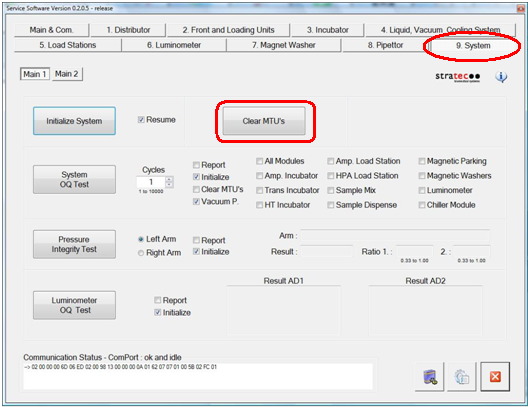
- Close Service Software, if necessary, and power down the Panther System.
- Raise the pipettor flaps.
- Carefully open the Service Drawer.

Note—It may be easier to remove the sample dispense slot before removing the Chiller Ramp. - Locate the Chiller Ramp module.
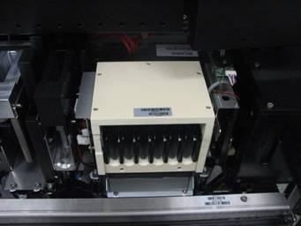
- Unscrew the two front screws of the Chiller Ramp.
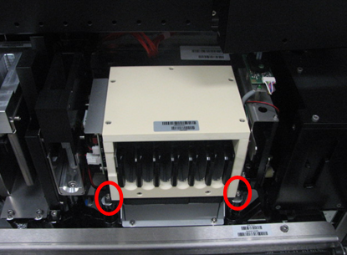
- Unscrew the two back screws.
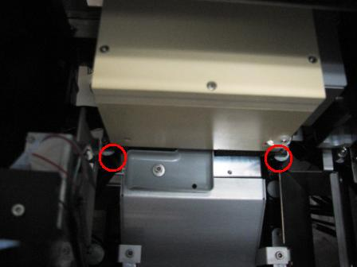
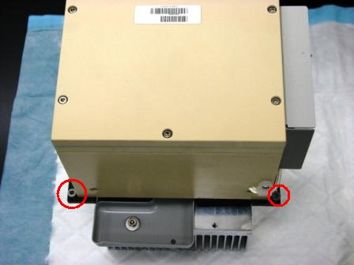
- Slightly lift the Chiller Ramp up so that you can get to the PCB on the side of the Chiller Ramp.
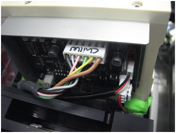
- Disconnect the power cable and fan from the Chiller Ramp PCB.
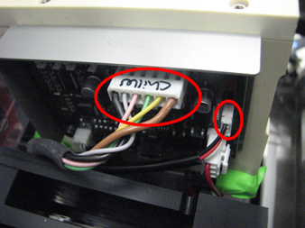
The fan and fan shroud will remain in the system.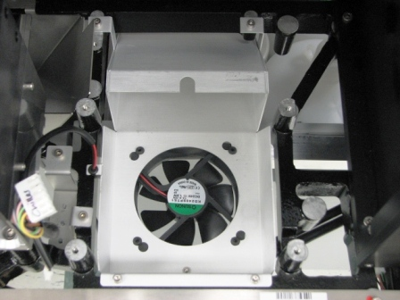
- Lift and remove the Chiller Ramp out of the system and place on an absorbent pad.
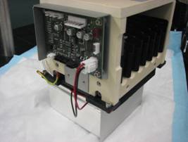
|
|
NOTE—If returning the module, decontaminate the module and complete the COD/OBF/RMA Form [19-02-APX-A]. |
Replacement Procedure
- Make sure the Service Drawer is fully open.
- Put the screws in the Chiller Ramp slots. Make sure the grounding lug is installed on the left rear mounting screw..
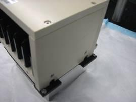
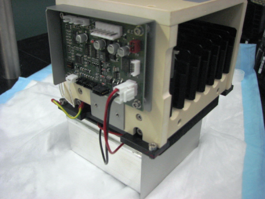
- Place the Chiller Ramp partially into its mounting location so that the cables can be connected.
- Connect the power cable and fan cable to the PCB.
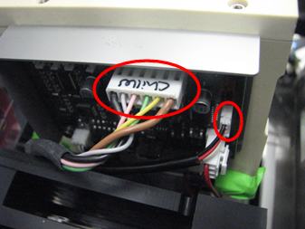
- Align the mounting screws to the mounting locations.
- Tighten the screws in the Chiller Ramp slots to the Service Drawer.
- Close the Service Drawer.
- Install the Panther System firmware to the module.

 button at the top of the page to send feedback, comments, or change requests.
button at the top of the page to send feedback, comments, or change requests.{kind=link}